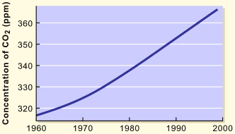

OBJECTIVE: to interpret a graph showing the average annual CO2 concentration in the Earth's atmosphere
The graph below represents the first set of data and shows the average annual CO2 concentration. CO2 levels are recorded in parts per million (ppm). This is the number of CO2 molecules in every one million molecules of the atmosphere.

1. CO2 concentration is measured in what units?
2. What was the CO2 concentration in 1980?
3. What is the difference in concentration from the earliest reading to the latest reading?
4. What overall impression does this graph convey to you?
When you have completed the questions, go to page